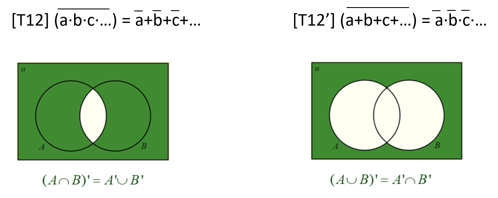
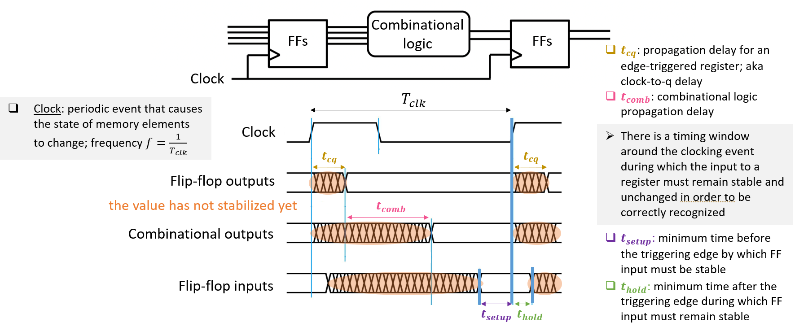
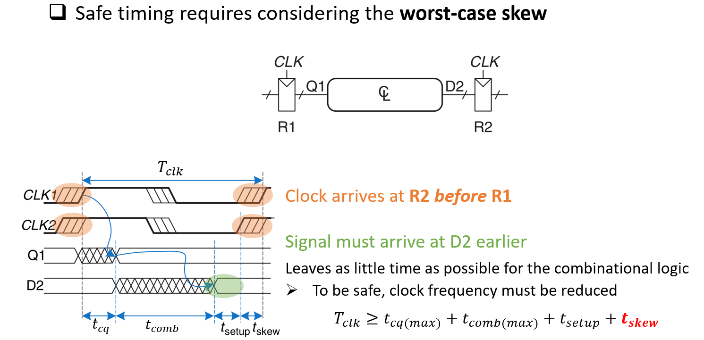
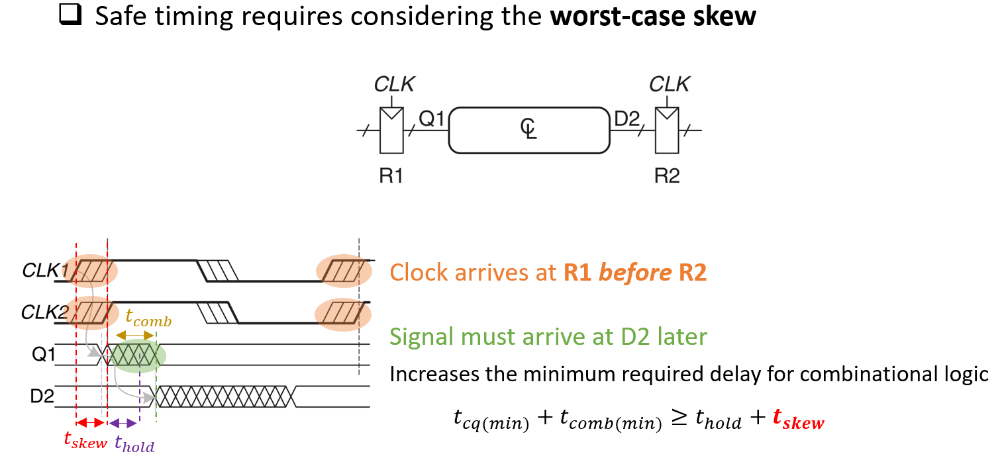

10 Summary
10.1 Binary Basics
The maximum (unsigned) decimal number that can be represented with \(n\) bits is \(\text{Max Value} = 2^n - 1\). This range can be generalized to other bases:
\[\text{Max Value} = base^n - 1\]
\[n = ceil(log_2(x))\]
\[n = ceil(log_2(x + 1))\]
To convert from decimal to binary:
- Step 1: Divide the given number repeatedly by 2 until you get 0 as the quotient.
- Step 2: Write the remainders in reverse order.
10.2 Boolean Algebra

10.3 Combinational Logic
10.4 Timing

\[t_{cq(min)}+t_{comb(min)} = t_{cq} \geq t_{hold}\]
\[t_{cq(max)}+t_{comb(max)}+t_{setup} \leq T_{clk}\]


Methods to fix setup time violation:
- Reduce data path delay
- logic optimizations (reduce logic depth)
- pipelining - break longer comb logic to smaller comb logics
- gate sizing (reduce gate delay by modifying gate size)
- Clock timing
- Reduce clock frequency (longer clock period)
- Reduce clock skew
Methods to fix hold time violation:
- Increase minimum data path delay
- Insert buffers or delay cells on minimum delay path
- Increase wire length or modify gate sizing
- Reduce clock skew
- increase clock delay at destination register, reduce clock delay at source register
- Remember that hold time is independent of the clock cycle’s time (clock period)
Synchronizer: A device that produces a synchronous output Q from an asynchronous input D within a bounded amount of time.
- Very useful for dealing with asynchronous input signals, clock domain crossing, mitigating effects of metastability
10.5 Sequential Logic
Synchronous reset: reset is sampled with respect to clock. In other words, when reset is enabled, it will not be effective till the next active clock edge -> potential issues w/ timing and clock gating.
Asynchronous reset: reset is sampled asynchronously (resets whenever the reset signal is triggered). sensitive to glitches and may lead to metastability. On the other hand, it is fast and works even without a clock.
10.6 FSMs
A Moore Machine is an FSM whose next state is determined by the current state and the inputs, and outputs depend only on the current state
A Mealy Machine is an FSM whose next state is determined by the current state and the inputs, and the outputs depend both on the current state and the inputs
10.7 Arithmetic
\(n\)-bits represent range \([-(2^{n-1}-1), 2^{n-1}-1]\)
\(n\)-bits represent range \([-(2^{n-1}), 2^{n-1}-1]\)
Flipping a two’s complement number’s sign:
- First invert each digit
- Add 1 to the number
Overflow (two’s complement addition) occurs if:
- Sign of both operands are the same, AND
- Sign of the sum is different
Carry propagation makes RCA slow. Common techniques to speed it up:
- Carry lookahead (CLA)
- Carry select
- Carry save
Prop, Gen equations
10.8 Memories
Register File